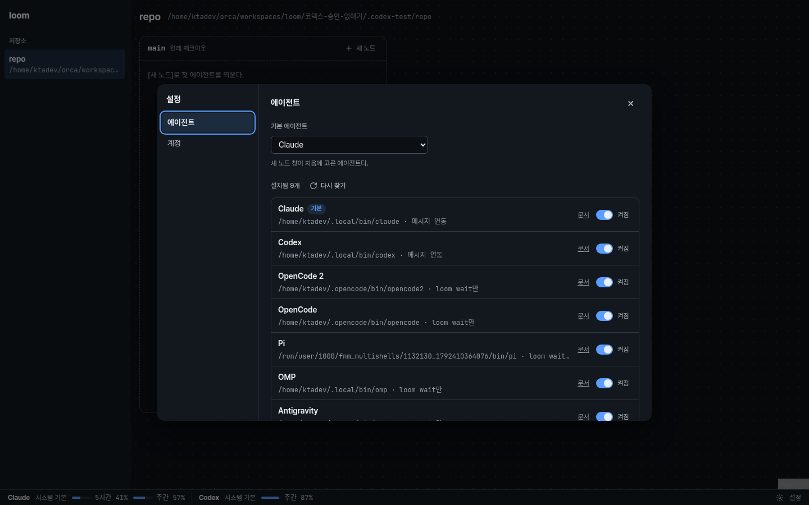

loom 설정: 에이전트 등록, 계정, 사용량
Orca의 「Agents」「Accounts」 설정과 상태 표시줄 사용량을 loom에 옮긴 목업이다. 바뀌는 구역만 그렸다. 폭은 1440 데스크톱 하나다. 승인할 것은 셋이다: ① 맨 아래 「결정표」의 넣기·빼기, ② 각 구역의 화면, ③ 「구조 제안」의 모듈 배치.
1·2. 하단 상태 줄과 사용량 팝오버
명세는 usage.html(2026-10-20 승인)이다. 상태 줄 전체가 버튼 하나이고, 팝오버 하나에 모든 공급자와 모델 창을 보인다.
3. 설정 창 「에이전트」 탭: 모든 권한 허용


--dangerously-skip-permissions, Codex --dangerously-bypass-approvals-and-sandbox, OpenCode 2 --auto. 카탈로그 항목의 bypass 필드다. 새 CLI는 이 필드를 더하면 스위치가 생긴다.
Claude는 계정마다 첫 실행에 「Bypass Permissions mode」 동의 창을 한 번 띄운다. 사람이 카드 터미널에서 고른다. loom은 대신 누르지 않는다. Codex·OpenCode 2는 동의 창이 없다(2026-10-19 실측).
loom spawn으로 띄운 자식도 이 스위치를 따른다.
4. 설정 창 「계정」 탭과 로그인 창
~/.claude, ~/.codex)으로 뜬다. 계정 하나가 한도에 닿으면 다른 계정으로 바꿀 방법이 없다.
개선 사항Orca처럼 공급자마다 계정을 여럿 둔다. 계정마다 loom이 만든 로그인 폴더(~/.loom/accounts/<공급자>/<id>)를 쓴다. [계정 추가]는 아래 로그인 창에서 CLI 로그인을 띄운다. 사용자의 기본 로그인 폴더는 고치지 않는다.
계정
Claude
5시간88%주간70%
5시간58%주간82%
사용량을 볼 수 없다
Codex
5시간19%주간45%
Claude 계정 추가
api.anthropic.com/api/oauth/usage를 부른다. Codex는 codex app-server의 account/rateLimits/read를 부른다. 둘 다 Orca와 같은 출처다.
5. 새 노드 창: 프로필만 고른다

| 결정 | 권장안 | 이유 |
|---|---|---|
| 입력 칸 | 「프로필」 하나. 이름·명령·첫 지시문 칸을 지운다 | 사람 지시 「어떤 프로필로 열지만 선택」 |
| 노드 이름 | 데몬이 <에이전트 id>-<번호>로 짓는다(claude-1, codex-2, 셸은 shell-1). 번호는 사람이 띄운 노드 사이에서 겹치지 않는 가장 작은 수다 | 사람이 띄운 노드끼리 이름이 겹치지 않는다. loom spawn의 이름 인자는 그대로다 |
| 고르기 컨트롤 | 검색 입력(combobox)과 목록(listbox). 글자를 치면 이름으로 거른다. ↑↓로 옮기고 Enter로 만든다. 항목을 두 번 누르면 바로 만든다 | 44개라 선택 칸으로는 찾기 어렵다 |
| 목록 순서 | 설치됨(카탈로그 순서) → 기본 셸 → 설치하지 않음. 설치하지 않은 항목은 흐리게 두고 고를 수 없다 | 카탈로그가 유일한 원천이다. 화면에 에이전트 이름을 적은 분기를 두지 않는다 |
| 처음 값 | 최근에 만든 프로필(「최근」 표시). 그래프에서 사람이 마지막으로 띄운 노드의 에이전트다. 따로 저장하지 않는다. 없으면 설치한 첫째 | 사람 지시. 설정의 「기본 에이전트」 칸이 하던 일을 맡는다 |
| 전달 방식 표시 | 메시지 연동(훅·app-server)이 없는 항목 오른쪽에 「터미널만」 | 그 노드는 조정·중단을 받지 않고 loom wait로만 받는다 |
| 모든 권한 허용 안내 | 고른 프로필이 모든 권한 허용으로 뜨면 한 줄로 알린다 | 승인 창이 뜨지 않는 이유를 사람이 안다 |
| 계정 한 줄 | Claude·Codex를 고르면 지금처럼 쓸 계정과 남은 비율을 보인다 | 바뀌지 않는다 |
| 설정 「기본 에이전트」 | 지운다 | 「최근」이 같은 일을 한다 |
| 검색 결과 없음 | 목록 자리에 「찾는 프로필이 없다」 한 줄. [만들기]는 막는다 | 빈 목록이 깨진 화면처럼 보이지 않게 한다 |
| 설정 켜기·끄기 | 지운다. 설치한 것은 모두 목록에 보인다 | 검색 목록이라 줄일 필요가 작다. 스위치가 행마다 하나로 준다 |
클릭 수: 전 [새 노드] → 이름 입력 → 에이전트 고르기 → [만들기]. 후 [새 노드] → Enter(최근 프로필) 또는 항목 두 번 누르기.
6. 설정 창 「UI」·「터미널」 탭: 화면 테마와 터미널 테마

후: 「UI」 탭
UI
테마
후: 「터미널」 탭
터미널
다크 모드 테마
~/loom $ git status -sb ## main...origin/main M src/settings.rs ?? web/src/theme.ts ~/loom $ cargo test test settings::put_then_get ... ok test daemon::with_theme ... FAILED warning: 1 test skipped ~/loom $
라이트 모드 테마
~/loom $ git status -sb ## main...origin/main M src/settings.rs ?? web/src/theme.ts ~/loom $ cargo test test settings::put_then_get ... ok test daemon::with_theme ... FAILED warning: 1 test skipped ~/loom $
결정표
| 항목 | 정한 것 | 이유 |
|---|---|---|
| 고르는 자리 | 설정 창 새 「UI」 탭과 「터미널」 탭 | 사람 지시 「ui / 터미널 설정 기능 추가」. 화면 테마와 터미널 테마는 따로 바뀐다. |
| UI 테마 컨트롤 | 세 칸 라디오(시스템·라이트·다크). 처음 값 「시스템」 | 값이 셋이라 모두 보인다. 한 번 누르면 바뀐다. |
| 터미널 테마 목록 | loom 테마 2개(「Loom Dark」「Loom Light」, 맨 위)와 Orca 내장 30개 전부. 다크 모드용과 라이트 모드용을 따로 고른다. 두 목록 모두 32개를 보인다 | 사람 지시 「orca에서 지원하는거 모두」. Orca와 같이 어떤 테마든 어느 모드에 써도 된다. |
| 색 원천 | 데이터 파일 하나(web/src/terminalThemes.ts). Orca 30개는 Orca 1.4.229 설치본 렌더러 번들의 내장 테마 객체를 스크립트로 꺼냈다. loom 2개는 loom 승인 목업의 토큰과 1판 라이트 16색이다 | 손으로 옮겨 적지 않는다. 파일 머리에 출처를 적는다. |
| 기본값 | 다크 「Loom Dark」, 라이트 「Loom Light」, 스위치 꺼짐 | 사람 지시(2026-10-19) 「현재 테마를 기본 테마로 설정하라, orca꺼 말고」. 1판의 라이트 16색은 지운다. 같은 일을 이 목록이 한다. |
| 「다크 모드와 같게」 | 스위치 「라이트 모드에서도 다크 모드 테마를 쓴다」 | Orca의 terminalUseSeparateLightTheme를 뒤집은 뜻이다. 끄면(기본) 라이트 모드에서 라이트 테마를 쓴다. |
| 미리보기 | 정적 HTML(<pre>에 테마 색을 칠한다). 다크·라이트 하나씩 | xterm 미리보기는 터미널 인스턴스 두 개, 글꼴 로딩 대기, 이스케이프 문자열이 더 든다. 정적 HTML은 색 값만 읽는다. 바탕·글자·16색·커서·선택 영역을 모두 보인다. |
| 목록 컨트롤 | 라디오 목록(높이 고정, 스크롤). 칸마다 바탕·글자색 견본 「Aa」 | 네이티브 select는 항목에 마우스를 올려도 알림이 없어 미리보기를 바꿀 수 없다. 라디오는 방향키로 옮기면 바로 고른다. |
| 초기화 | [터미널 테마 초기화] 버튼 하나. 확인 창 없음 | 되돌리기 쉽다. 결과가 미리보기와 열린 터미널에 바로 보인다. |
| 저장 | 데몬 설정 theme(UI)과 terminalTheme { dark, light, matchDark }. 이름이 없거나 목록에 없으면 기본값으로 읽는다 | 다른 브라우저에서 열어도 같다. 초기화는 terminalTheme을 비운다. 기본값은 데이터 파일 한 곳에만 둔다. |
| 첫 그리기 | 데몬이 첫 페이지 <html>에 data-theme을 넣는다 | 화면 스크립트가 돌기 전에 테마가 정해진다. 페이지를 열 때 다른 테마가 보이지 않는다. |
| UI 색 토큰 | 토큰마다 light-dark(라이트, 다크). 다크 값은 승인본 그대로다. --term-ink는 지운다 | 터미널 글자색은 이제 터미널 테마가 정한다. 제품 --warn은 쓰이지만 정의가 빠져 있었다. 이번에 정의한다. |
| 다크 카드 모양 | 그대로다. 「Loom Dark」의 바탕은 승인본 --term, 글자는 옛 --term-ink, 16색은 xterm 기본색이다 | 사람 지시로 Orca 기본값(#282c34)을 쓰지 않는다. 승인본 다크 모양을 지킨다. |
| 만들지 않음 | Orca의 색 재정의(16색 개별 지정)와 사용자 테마 | 사람이 요청하지 않았다. |
| 대비(WCAG AA) | UI 라이트: 본문 15.8:1, --ink-2 8.8:1, --ink-3 5.2~6.3:1, 강조색 글자 5.2:1, 강조색 위 글자 5.5:1, --ok 5.5:1, --err 6.0:1, --warn 5.0:1 | 모두 4.5:1 이상이다. 터미널 테마 30개의 색은 Orca 값 그대로다. 대비를 고치지 않는다. |
점검(2026-10-19, 각 1회): impeccable detect 결함 0건. 「여백 부족」 경고 2건은 승인본과 같은 오탐이다(화면 틀 .app·.shell의 테두리, 안쪽 패널이 여백을 가진다). 대비 경고 4건은 목록 견본 「Aa」의 Solarized Dark·Solarized Light 글자색이다. 테마 고유 색을 보이는 견본이라 그대로 둔다. UI 토큰의 대비 경고는 0건이다. WIG: 라디오는 글자와 함께 한 누름 영역이다. 포커스 테두리와 호버 바탕이 있다. color-scheme을 <html>에 둔다. 네이티브 select는 토큰 바탕·글자색을 받는다. theme-color는 OS 설정별 두 값(media)을 둔다. 데스크톱 브라우저는 이 값을 쓰지 않는다.
결정표: Orca 기능 가운데 넣을 것과 뺄 것
권장안을 적었다. 바꿀 줄만 말한다. 묻는다 줄은 답이 필요하다.
| Orca 기능 | loom에서 | 권장 | 이유 |
|---|---|---|---|
| 에이전트 카탈로그 45개 | Orca 표를 데이터 파일로 옮긴다 | 넣는다 | 목록을 지어내지 않는다. Orca가 고치면 표만 다시 옮긴다. |
| 설치 탐지, [Refresh] | 데몬 PATH에서 찾는다, [다시 찾기] | 넣는다 | 요청의 「탐색」이다. |
| Enabled/Disabled | — | 뺀다 | 새 노드 창이 설치한 것을 모두 검색 목록으로 보인다(5번 구역). |
| Default Agent (Auto 포함) | 새 노드 창의 「최근」 | 뺀다 | 최근에 만든 프로필이 처음 값이다. 없으면 설치한 첫째다. |
| Available to install, Docs | 접은 목록과 문서 링크 | 넣는다 | 설치 방법을 찾는 곳이다. |
| Install 버튼(설치 명령 실행) | — | 뺀다 | 설치는 사용자 셸에서 한다. 문서 링크로 충분하다. |
| 명령 재정의(Command) | 실행 파일 경로 한 칸 | 묻는다 | PATH 밖에 설치한 CLI를 쓰려면 필요하다. 권장: 뺀다. 데몬을 띄운 셸 PATH에 넣으면 된다. 필요해지면 더한다. |
| 기본 인자(Arguments), 환경 변수(Environment) | — | 뺀다 | 「직접 입력」에 명령 전체를 적으면 같은 일을 한다. |
| Agent Permissions (Yolo/Manual) | 에이전트마다 「모든 권한 허용」, 처음 값 켜짐 | 넣는다 | 사람 지시 「터미널 생성시는 항상 모든 권한을 허용한걸 디폴트로」. 인자는 카탈로그 bypass 필드다(3번 구역). |
| Claude·Codex 계정 여러 개, 시스템 기본 | 4번 화면 | 넣는다 | 요청의 「계정 관리」다. |
| 계정마다 따로 둔 로그인 폴더 | ~/.loom/accounts/<공급자>/<id> | 넣는다 | 사용자의 ~/.claude·~/.codex를 고치지 않는다(docs/design.md 「프로필」). |
| Needs re-auth, [Re-authenticate] | 「다시 로그인 필요」, [다시 로그인] | 넣는다 | 토큰이 만료되면 사용량과 노드가 모두 실패한다. |
| 하단 상태 줄 사용량(늘 보임) | 1번 화면. 공급자 순서 Claude, Codex | 넣는다 | 사용자 지시: 「사용량은 orca처럼 하단에 항상 뜨도록」. |
| 5시간·주간 비율, 초기화 시각 | 1·2·4번 화면 | 넣는다 | 요청의 「남은 사용량 표시」다. |
| Codex 한도 초기화 크레딧 [Reset now] | — | 뺀다 | 돈이 드는 동작이다. Codex 화면에서 한다. |
| Claude 추가 사용량(금액), 모델별 주간 한도 | — | 뺀다 | 계정 고르기에 필요한 값은 5시간·주간 두 창이다. |
| 상태 줄 끄기, 항목 고르기 | — | 뺀다 | loom 상태 줄 항목은 사용량 둘과 [설정]뿐이다. |
| Compact/Detailed 표시 전환 | 늘 두 창(5시간·주간)을 보인다 | 뺀다 | 공급자가 둘이라 자리가 남는다. Orca의 Compact는 공급자마다 대표값 하나만 보인다. |
| 사용 비율/남은 비율 전환(기본 「used」) | 남은 비율만 보인다 | 뺀다 | 요청이 「남은 사용량 표시」다. 전환 옵션을 두지 않는다. |
| 사용량 갱신 주기 | 데몬이 5분마다, 팝오버를 열 때, [새로 고침] | 묻는다 | Orca의 주기는 확인하지 못했다. 5분이면 공급자 API의 429(요청 제한)를 피한다. 다른 값이 필요하면 말한다. |
| 계정 고르는 단위 | 공급자마다 「쓰는 중」 계정 하나. 새 노드가 그 계정으로 뜬다 | 묻는다 | Orca와 같다. 다른 안: 새 노드 창에서 노드마다 계정을 고른다. 칸이 하나 늘어난다. |
구조 제안: 모듈, 파일, 인터페이스
AGENTS.md 10절에 따라 구현 전에 확인받는다. 레이어 규칙(docs/design.md 「레이어」)을 따른다: 기능 모듈끼리 부르지 않고, 데몬 라우트가 엮는다.
| 레이어·파일 | 바뀌는 이유 | 맡는 일과 인터페이스 |
|---|---|---|
기능 · src/profile.rs + src/agents.json | CLI 버전, Orca 카탈로그 | 카탈로그를 데이터로 둔다(id, label, 실행 명령, 별칭, 문서 링크, 첫 지시문 방식, 메시지 연동). catalog(), detect(&Agent) -> Option<PathBuf>, command(&Agent, brief, env, cwd). Start는 Agent { agent, brief }·Command { line } 둘이 된다. 첫 지시문 방식은 enum Prompt { Argv { separator }, Flag(&str), None }이다. |
기능 · src/accounts.rs | 공급자 로그인 폴더 형식 | Provider { Claude, Codex }, AccountId. 계정 목록의 원천은 ~/.loom/accounts/<공급자>/ 폴더다. list(Provider)(이메일은 각 폴더 파일에서 읽는다), create(Provider) -> (AccountId, 로그인 명령), remove, launch_env(Provider, AccountId) -> Vec<(키, 값)>(CLAUDE_CONFIG_DIR, CODEX_HOME). |
기능 · src/usage.rs | 공급자 사용량 API | fetch(Provider, 로그인 폴더) -> Usage { session: Window, weekly: Window }, Window { used_percent, resets_at }. 결과는 데몬이 계정마다 5분 캐시한다. |
| 저장 · 2단위 저장 모듈 | 저장 형식 | 설정 세 값: 끈 에이전트 목록, 기본 에이전트, 공급자마다 쓰는 계정. 「큐」 브랜치가 main에 병합된 뒤 그 모듈의 표에 더한다. |
조합 · src/daemon.rs | 화면 요구 | GET /api/agents, POST /api/agents/refresh, PUT /api/settings, GET /api/accounts(사용량 포함), POST /api/accounts/{공급자}(로그인 PTY id를 돌려준다), PUT /api/accounts/{공급자}/active, DELETE /api/accounts/{공급자}/{id}, POST /api/usage/refresh. 로그인 PTY는 기존 NodeHost로 띄우고 노드 목록에 넣지 않는다. |
상호작용 · web/src/ | 화면 | 새 파일 Settings.tsx(창과 두 탭), StatusBar.tsx(하단 상태 줄과 사용량 팝오버). 고칠 파일 NewNodePopover.tsx, NodeCard.tsx(label), App.tsx(화면 맨 아래 줄), api.ts. 로그인 창은 기존 Terminal.tsx를 쓴다. |
새 의존성
| 이름@버전 | 대체 범위 |
|---|---|
which@8 | PATH에서 실행 파일 찾기. Windows의 PATHEXT까지 맡는다. 직접 PATH를 훑는 코드를 쓰지 않는다. |
reqwest@0.12 (rustls, json) | Claude 사용량 HTTPS 호출 하나. Codex는 CLI(codex app-server)를 부르므로 HTTP가 필요 없다. |
조각 순서
- 로직 A: 카탈로그·탐지·
Start변경과/api/agents. 저장과 무관하다. 지금 시작한다. - 로직 B: 계정 폴더·로그인·사용량 조회와 계정 API. 쓰는 계정 선택만 저장이 필요하다. 그 전에는 「시스템 기본」을 쓴다.
- 로직 C: 설정 세 값의 저장. 「큐」 브랜치 병합 뒤 시작한다.
- 화면: 1~5번 구역. 로직 A·B를 합친 뒤 시작한다.
확인하지 않은 것
- macOS에서 Claude 토큰은 키체인에 있다. 첫 구현은
.credentials.json(Linux·Windows)만 읽고, macOS에서는 「사용량을 볼 수 없다」를 보인다. - Codex 로그인은 브라우저 콜백(localhost 1455 포트)을 쓴다. 도커 개발 컨테이너 안에서는 끝까지 확인할 수 없다. 호스트에서 확인한다.
점검 기록
- impeccable detect(2026-10-19, 1회): 3건. 「얇은 테두리와 넓은 그림자」 2건은 설정 창 테두리를 지워 고쳤다. 「제목 크기 단계가 평평함」 1건은 문서 제목을 26px·20px로 키워 고쳤다. 제품 화면 글자 크기는 main.html 승인본을 그대로 쓴다.
- WIG(1회): 아이콘만 있는 버튼에
aria-label을 달았고 장식 아이콘에aria-hidden을 달았다. 네이티브select에 배경색과 글자색을 정했다. 숫자는tabular-nums다. 구현 때 지킬 것: 계정 지우기는 확인 창을 띄운다. 초기화 시각은Intl.DateTimeFormat으로 쓴다. 긴 이메일은 말줄임한다. 설정 창은overscroll-behavior: contain을 쓰고 열린 탭을 URL hash(#settings/agents)에 둔다. 경로와 명령은translate="no"를 단다. - 3·5번 구역(2026-10-19, 프로필 고르기·모든 권한 허용): impeccable detect 1건 「cramped-padding」은 바꾸지 않은 1번 구역 상태 줄 틀(
.shell)이다. 패널이 테두리까지 닿게 만든 배치라 오탐으로 둔다. main.html도 같은 1건(.app)이다. WIG: 검색 입력은role="combobox"·aria-activedescendant, 목록은role="listbox"(WAI-ARIA combobox 패턴)이다. 목록은 44개라 가상화하지 않는다(기준 50개). 결과 없음 상태를 더했다. 구현 때 지킬 것: 긴 이름은 말줄임한다(min-width: 0). 스위치는 글자까지 한 번에 눌린다(label로 감싼다). - 오탐으로 둔 것: WIG의 「placeholder는 …로 끝낸다」는 승인본 main.html의 문장형 한국어 안내와 맞지 않아 그대로 둔다.